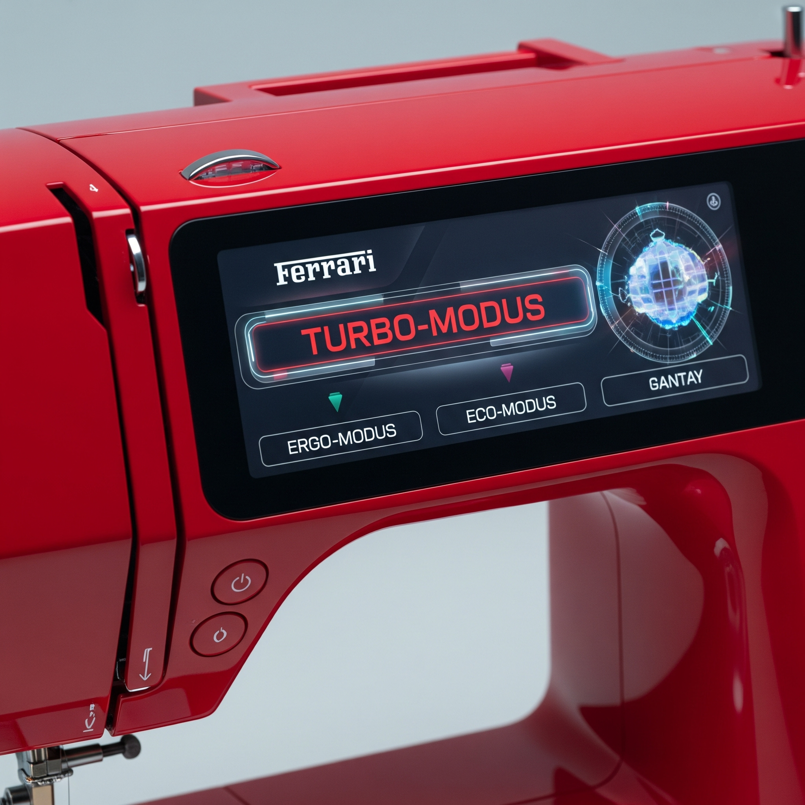

Die Ferrari Precision Stitching Limited Edition ist auf nur 100 Stück weltweit limitiert. Vollendet durch Enzo Ferraris Autogramm.
Erste Hochleistungs-Nähmaschine die Ferrari-Technologie mit Luxus und Handwerk verknüpft.
Die Ferrari Precision Stitching Limited Edition ist auf nur 100 Stück weltweit limitiert. Vollendet durch Enzo Ferraris Autogramm.
Ultraschneller Nähmotor, inspiriert von Ferrari-Renntechnik und vom Ferrari V8-Motor.
Die Ferrari Precision Stitching™ kombiniert kompromisslose Präzision mit kraftvoller Dynamik – inspiriert vom Herzstück jedes Ferrari: dem V8-Motor.
Dank ihrer Hochleistungsantriebstechnik liefert sie sekundenschnelle Stichergebnisse und ein Näherlebnis, das an die Performance eines Supersportwagens erinnert – inklusive charakteristischem Klang.